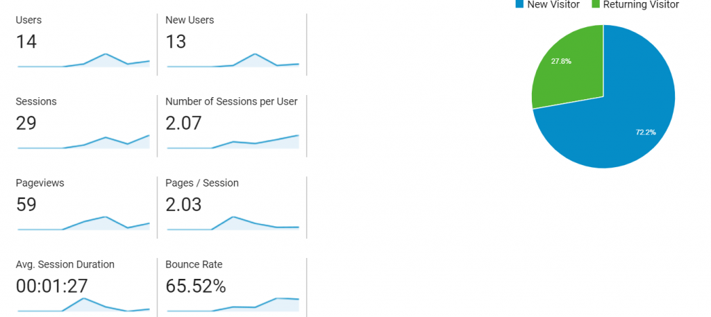
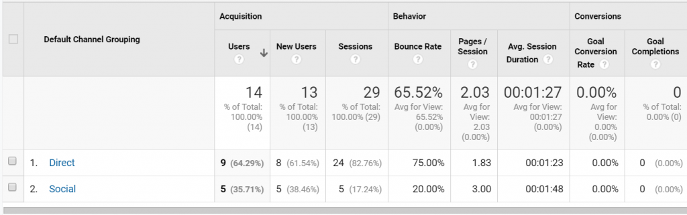
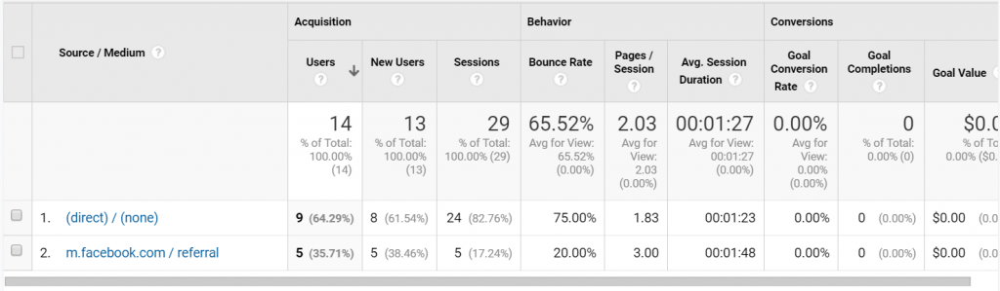

For this week’s project I added Google Analytics to this journal. Prior to beginning this
project I hypothesized that my site would be most popular with women ages 25-30 since most of my
friends are in that range and the most traffic would come directly from users clicking the link
for my journal. I also figured that the main page of my journal would be the most popular (since
it is the link I sent out to others for testing.).
The process to get analytics set up on this journal wasn’t terribly difficult. The JavaScript
code was provided to me immediately after signing up and I was able to insert it into my header
and footer scripts plugin to begin tracking without issue. There is an overwhelming amount of
really neat stuff you can track with this tool such as seeing the what types of devices and
operating systems your visitors use, what internet network they are using to access your page,
and their demographics.
I attempted to set up the demographics tracking twice on my page by following the instructions
online, however it never began tracking. This was unfortunate because I was really looking
forward to seeing if my guesses were accurate. I am working on getting that portion fixed and
updating this post once I have more information. However, the information I was able to track
had some interesting findings.

Here is an overview of how my site did over this week. I didn’t expect to have many page views or returning users so was pleased to see that I did.

Above is the Channel report which shows how users accessed my page, either by the direct link or through social media. Digging deeper on the social media information showed that my journal was accessed through Facebook which is puzzling because I never posted the link there. Besides that part, it was also interesting seeing how long people spent on my page. I also expected the bounce rate to be on the higher end since I did not instruct anyone specifically what to do when they got to my site.
This image shows that 5 of my users came from Facebook, which again is interesting because I
never provided the link on there. I’m wondering if someone that I did share the link with then
shared it to others through Facebook?
This project was great to get your feet wet with Google Analytics. There is so much more to
learn about it and all the awesome things you are able to do with it. It is a great tool to know
how to use and I am very excited to learn more about it!